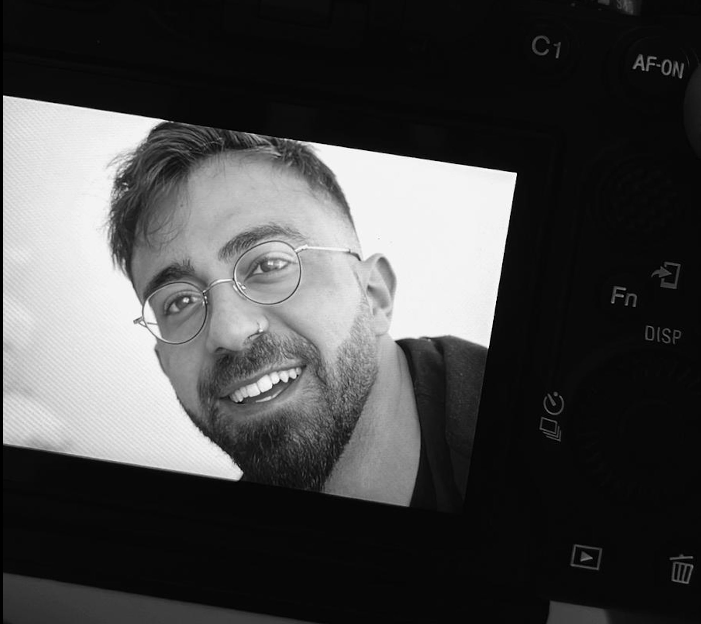
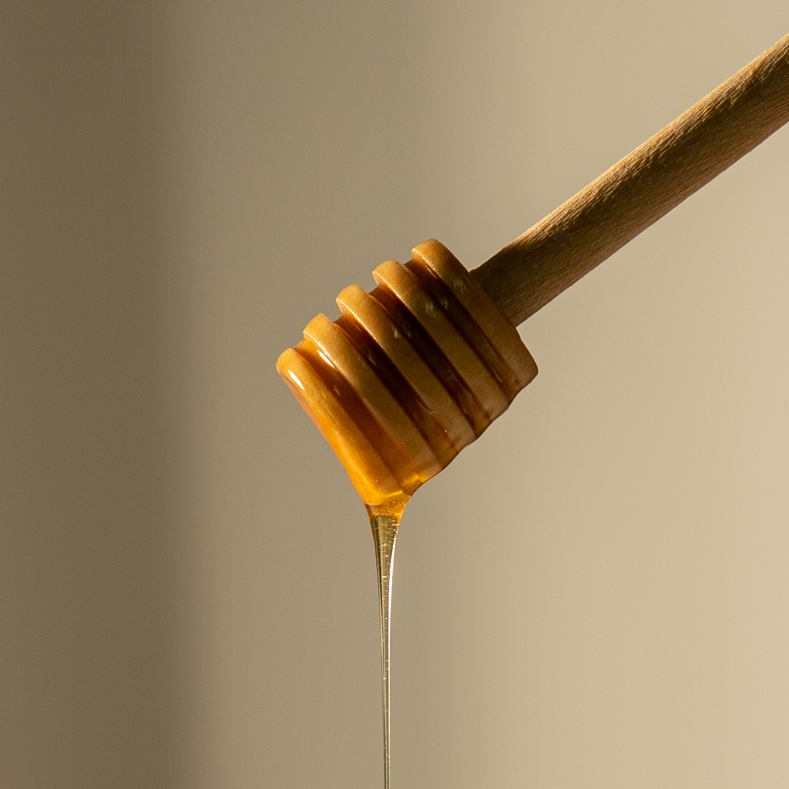

About Me
I'm Afik Buskila, a food photographer based in Israel. My passion for food photography began when I was working as a cook, and I realized that I wanted to capture the beauty of food in a different way. Since then, I've worked with a variety of clients to create stunning images that showcase their dishes in the best possible light.
My Photos



Contact Me
If you're interested in working together or just want to say hello, you can reach me at itzafik@gmail.com or by phone at +9726417001. Feel free to contact me if you have any questions or would like to discuss a project!